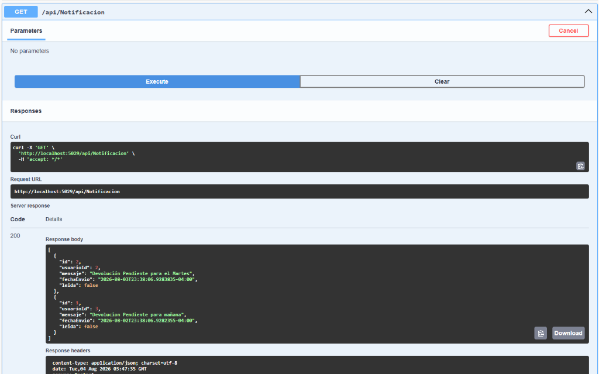
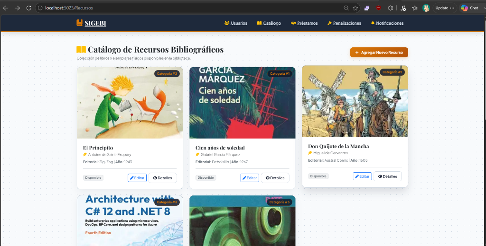
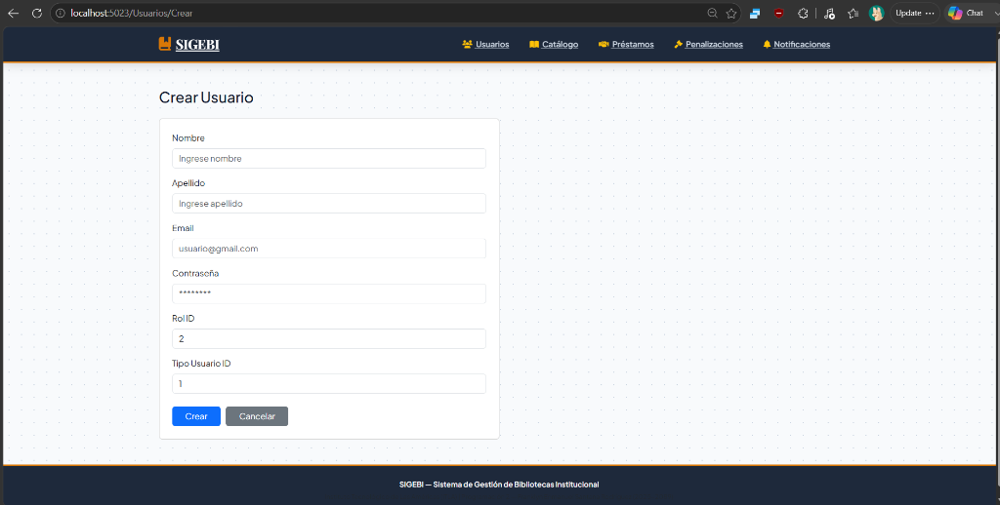

Desarrollo y Consumo de la Capa de Presentación Web (SIGEBI)
| Asignatura: | Programación 2 |
| Profesor: | Francis Ramírez |
| Estudiante: | Franklyn Enmanuel Santana Rodríguez |
| Matrícula: | 2025-2089 |
| Fecha de Entrega: | 3 de Agosto de 2026 |
| Repositorio GitHub: | https://github.com/Osiris3939/SIGEBI |
El sistema SIGEBI (Sistema de Gestión de Bibliotecas Institucional) implementa una arquitectura N-Tier desacoplada bajo los principios de Arquitectura Limpia (Clean Architecture) y Diseño Orientado a Servicios (SOA). La capa de presentación se encuentra estrictamente separada del backend mediante contratos de servicio HTTP RESTful.
El backend (SIGEBI.Api) se ejecuta de manera independiente en http://localhost:5029 utilizando ASP.NET Core Web API y exponiendo los recursos de negocio. La capa de presentación (SIGEBI.Web) se ejecuta en http://localhost:5023 sobre ASP.NET Core MVC y consume dichos endpoints exclusivamente mediante servicios de API desacoplados sin acceso directo a la persistencia.
IApiClientService y su clase concreta ApiClientService.cs, la cual utiliza IHttpClientFactory para gestionar conexiones HTTP eficientes.UsuarioApiConsumerService, RecursoApiConsumerService, PrestamoApiConsumerService, PenalizacionApiConsumerService y NotificacionApiConsumerService.| Recurso Consumido | Operaciones RESTful Soportadas |
|---|---|
| api/Usuario | GET, GET/{id}, POST, PUT/{id}, DELETE/{id} |
| api/RecursoBibliografico | GET, GET/{id}, POST, PUT/{id}, DELETE/{id} |
| api/Prestamo | GET, GET/{id}, POST, PUT/{id}, DELETE/{id} |
| api/Penalizacion | GET, GET/{id}, POST, PUT/{id}, DELETE/{id} |
| api/Notificacion | GET, GET/{id}, POST, PUT/{id}, DELETE/{id} |
Configuración de IHttpClientFactory en SIGEBI.Web/Program.cs:
A continuación se presentan las evidencias visuales del funcionamiento del sistema integrando la UI con la API RESTful:



IHttpClientFactory y la inyección de servicios desacoplados garantiza una gestión eficiente de conexiones HTTP y alta reusabilidad.OperationResult impide caídas del servidor ante errores de comunicación o backend fuera de línea.